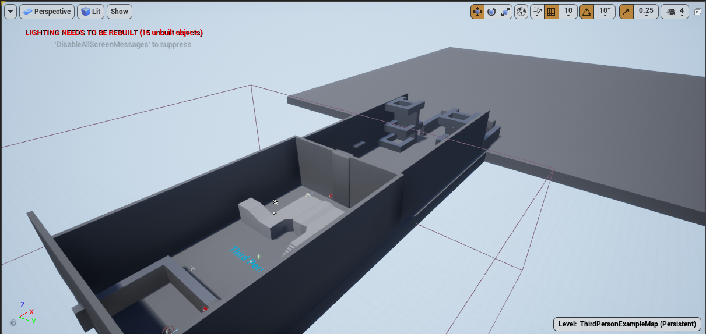

Prison Escape
This game has 3 game modes. First game mode is the story mode in which the player is a kid who is a prisoner to an evil scientist and has got a chance to escape. He has hacked into an enemy robot and can control him as the robot can fight the resistance with his gun.
The second game mode is Player vs Player. This mode has 2 teams. The blue team and the red team. The goal of this is mode is that both the player fight against each other and score points by killing off each other, for every death the opponent scores 20 points and the first one to reach 160 points win. Players start at their respective corner.
The third game mode is Tower Defense. The goal of in this mode is to survive the enemy waves and score points by killing them off. Both the players must work together and need to defend themselves from enemy waves. If they survive all the waves with out either off them dying the win.